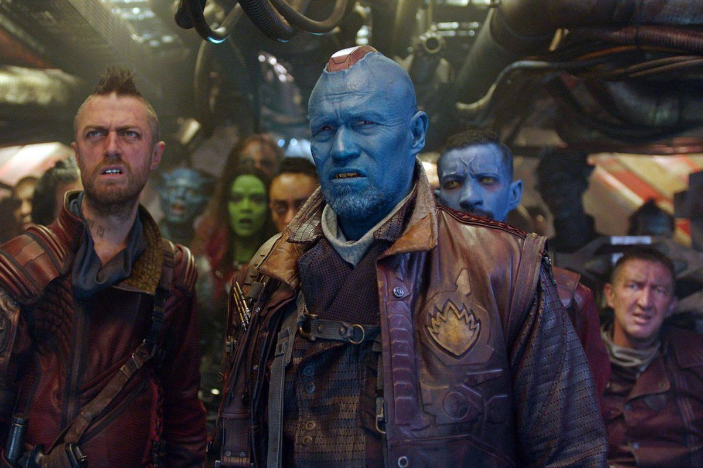

Peter Jason Quill was a half-human, half-Celestial who was abducted from Earth by the Yondu Ravager Clan in 1988. After his abduction, he began building fame as the legendary outlaw Star-Lord. In 2014, he decided to leave the Ravagers and operate individually, starting by stealing a precious artifact known as the Orb, unintentionally becoming a key player in the Quest for the Orb. Following his arrest, he forged an uneasy alliance with fellow inmates Gamora, Drax the Destroyer, Rocket Raccoon, and Groot, and formed the Guardians of the Galaxy team with them a short while later in order to stop Ronan the Accuser from destroying Xandar. After the Battle of Xandar, he left with the other Guardians to do "a little bit of good and a little bit of bad."
A few months later, he and the other Guardians were hired by Ayesha and the Sovereign to defend interdimensional batteries from an Abilisk. However, after Rocket stole some of the batteries, Ayesha sent the Sovereign fleet after them, with the Guardians being saved when the fleet is destroyed by Ego, Quill's biological father, whom Quill had never met before. Quill spent a few days bonding with his father, but when Ego revealed that he was responsible for Meredith Quill's death, Quill allied with his fellow Guardians to prevent Ego's quest to terraform the universe. After killing Ego and witnessing Yondu Udonta's sacrifice, Quill continued to lead the Guardians of the Galaxy, and eventually started a relationship with Gamora.
The Guardians of the Galaxy then encountered the Asgardian Thor, and began racing against Gamora's adopted father Thanos to procure the Infinity Stones. Splitting up into two groups, Quill led Gamora, Drax, and Mantis to Knowhere to recover the Aether from the Collector, only to lose both it and Gamora to Thanos. Quill, Drax and Mantis later traveled to Titan, Thanos' homeworld, to confront Thanos in person. With help from Iron Man, Doctor Strange and Spider-Man, the Guardians fought Thanos for a time, during which Quill was devastated to learn that Thanos had killed Gamora, in his anger he unintentionally gave Thanos an opening to strike back and Quill alongside his allies were ultimately defeated. When Thanos did succeed in obtaining all of the stones, he used them to wipe out half the universal population, Quill and the Guardians included, except Rocket Raccoon and Nebula.